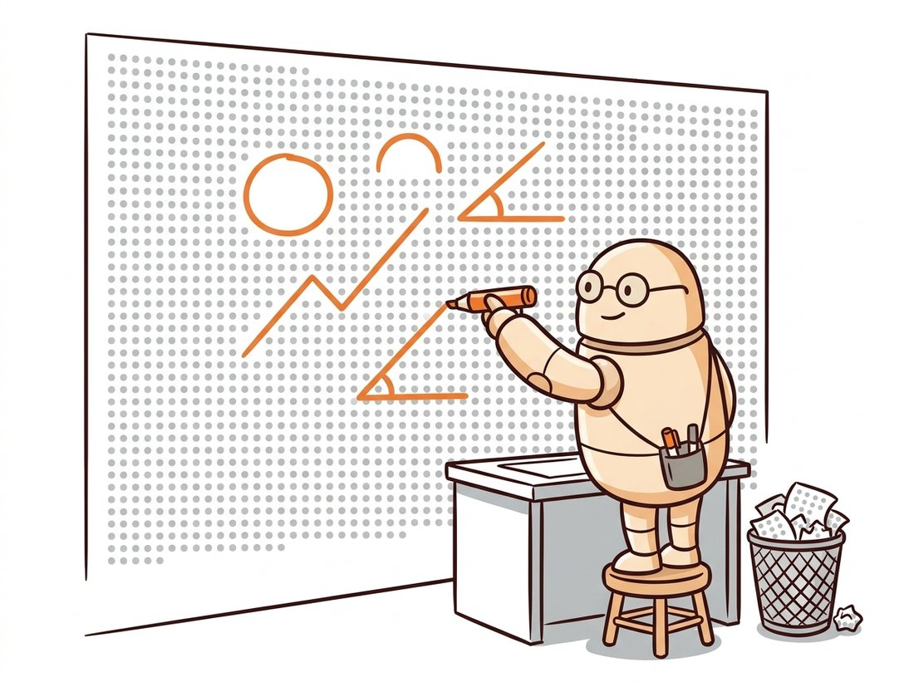

"Most pixels are boring. My entire career is the other two percent, and even there I mostly report rumors."
A Gradient Magnitude With Strong Opinions
An edge is not a thing in an image; it is a decision about an image, and this section is about the measurement that decision rests on: the gradient. The derivative filters of Chapter 3 told us how fast brightness changes at every pixel. Here we reread that gradient field as evidence about the physical world (object boundaries, creases, paint, shadows), confront the noise tax that every derivative pays, and then stare directly at the uncomfortable gap this chapter exists to close. A gradient map assigns a number to every pixel, but an edge map must commit to a yes or a no, and no single threshold can make that commitment well. Naming that gap precisely is what makes the Canny detector of Section 9.2 feel inevitable rather than arbitrary.
Two million pixels enter; a few thousand earn the label "edge," and the rest are noise to be discarded. Getting that triage right is the whole job, because every contour the rest of this chapter detects, fits, and steers a car by begins as a single yes-or-no verdict made here. Chapter 3 already gave us the raw material: Sobel and Scharr kernels that report how fast brightness changes at every pixel, with strong responses on a few percent of any natural photograph. This section picks those few percent back up with a different question. Not "how do I compute the derivative?" (that is settled) but "what is the derivative telling me about the scene, and when should I believe it?" The illustration below dramatizes the stakes: an edge detector's real job is ruthless selection, keeping the few intensity changes that describe the scene and discarding the rest.

1. Where Edges Come From Beginner
Point a camera at a coffee mug on a desk and trace why any particular intensity change exists. The mug's silhouette against the wall is a depth discontinuity: two surfaces at different distances happen to be adjacent in the projection. The crease where the desk meets the wall is a surface-normal discontinuity: one material, two orientations, two amounts of reflected light. The logo printed on the mug is a reflectance change: same surface, different paint. And the soft boundary of the mug's shadow is an illumination change: same surface, same paint, different light. Four different physical events, and the camera flattens all of them into the same raw signal: a rapid change of intensity along some direction.
That flattening cuts both ways, and it is worth internalizing early. Not every intensity edge is an object boundary (shadows and specular glints produce vigorous gradients that mean nothing about shape), and not every object boundary produces an intensity edge (a white cat in front of a white radiator can vanish entirely). Classical edge detection cannot distinguish these cases; it reports intensity changes, full stop. Deciding which changes matter is a semantic judgment that this book ultimately hands to the learned models of Chapter 19 and beyond. What the classical machinery can do, superbly, is measure the changes themselves.
Intensity changes also come in shapes. Figure 9.1.1 sketches the four canonical edge profiles you will meet when you slice an image perpendicular to a boundary: the idealized step, the ramp that real optics actually deliver, the ridge (a thin bright or dark line such as lane paint or a wire), and the roof (a gradual rise and fall, typical at creases). The distinction has practical teeth: a first-derivative detector marks the steepest point of a ramp with a single peak, but a ridge produces two gradient peaks, one on each flank, which is exactly why naive edge detection on lane markings returns double lines, an annoyance Section 9.5 will deal with directly.
You can verify the ramp claim on any photograph you own by doing what an edge detector does: read a scanline. The code below slices one row out of a grayscale image, differentiates it, and prints the neighborhood of the strongest transition.
# Slice one row out of a grayscale image and differentiate it
# to expose the true shape of a "step" edge: a ramp a few pixels wide.
# The forward difference peaks at the steepest point of that ramp.
import cv2
import numpy as np
gray = cv2.imread("doorway.jpg", cv2.IMREAD_GRAYSCALE).astype(np.float32)
row = gray[240] # one horizontal scanline
d = np.diff(row) # forward difference along the row
i = int(np.argmax(np.abs(d))) # location of the strongest transition
print("intensities around the strongest edge:", row[i - 3:i + 4].astype(int))
print(f"steepest single-pixel jump: {d[i]:+.0f} gray levels at column {i}")
# Representative output:
# intensities around the strongest edge: [ 41 43 46 94 149 158 160]
# steepest single-pixel jump: +55 gray levels at column 312
np.diff on one scanline through a doorway image shows the "step" between wall and door frame is really a ramp spread across two to three pixels, and np.argmax(np.abs(d)) locates the column where the forward difference peaks.The printed neighborhood is the punchline: the transition from 46 to 149 takes two pixels, not zero. Every detector in this chapter is, at heart, a machine for finding the steepest point of such ramps and reporting it as a single, well-placed mark.
2. The Gradient, Reread as an Instrument Intermediate
The two-dimensional generalization of "steepest point of the ramp" is the image gradient, assembled from the partial derivatives that Chapter 3 taught us to estimate with Sobel and Scharr kernels:
$$ \nabla I = \left( \frac{\partial I}{\partial x},\; \frac{\partial I}{\partial y} \right), \qquad \|\nabla I\| = \sqrt{I_x^2 + I_y^2}, \qquad \theta = \operatorname{atan2}(I_y,\, I_x) $$
Treat these as two readings from one instrument. The magnitude $\|\nabla I\|$ answers "how much is brightness changing here?" and the orientation $\theta$ answers "in which direction is it changing fastest?". The geometry, drawn in Figure 9.1.2, contains one convention that trips up nearly everyone at least once: the gradient vector points across the edge (from dark toward light), so the edge itself runs perpendicular to $\theta$. When Section 9.2 suppresses non-maximal pixels "along the gradient direction" and when Section 9.3 lets edge pixels vote only for circles centered along their gradient ray, both are leaning on exactly this perpendicularity.
It is natural to assume that the gradient direction $\theta = \operatorname{atan2}(I_y, I_x)$ runs along the contour, the way you would trace it with a pen. In fact the gradient points across the edge, perpendicular to it, from dark toward light; the edge itself runs at $\theta + 90^\circ$. The two differ by exactly a right angle, so the error is silent: code that walks "along the gradient" to follow a contour actually steps off it immediately, and the non-maximum suppression of Section 9.2 compares the wrong neighbor pair and thins edges into a hatched mess instead of a clean crest. A quick diagnostic: on a purely vertical light-on-dark border, $I_x$ is large and $I_y \approx 0$, so $\theta \approx 0^\circ$ (horizontal) even though the visible edge is vertical. If your detector returns $\theta$ parallel to the boundary, you have swapped magnitude axes or confused the two directions.
Orientation is not a second-class citizen; aggregated over a region it becomes a fingerprint of scene structure. The code below computes the full gradient field and histograms the orientations of strong-gradient pixels, exposing the "Manhattan" statistics of a typical man-made scene.
# Compute the full gradient field with Sobel, then histogram the
# orientations of strong-gradient pixels. The point is that orientation,
# aggregated, fingerprints scene structure (here, a man-made facade).
import cv2
import numpy as np
gray = cv2.imread("office_facade.jpg", cv2.IMREAD_GRAYSCALE)
gx = cv2.Sobel(gray, cv2.CV_32F, 1, 0, ksize=3) # signed float, per Chapter 3
gy = cv2.Sobel(gray, cv2.CV_32F, 0, 1, ksize=3)
mag, ang = cv2.cartToPolar(gx, gy, angleInDegrees=True)
strong = mag > 80 # keep confident pixels only
hist, edges_ = np.histogram(ang[strong] % 180, bins=6, range=(0, 180))
for lo, frac in zip(edges_[:-1], hist / hist.sum()):
print(f"{lo:5.0f}-{lo + 30:.0f} deg : {frac:6.1%}")
# Representative output (an office facade):
# 0-30 deg : 41.7%
# 30-60 deg : 3.9%
# 60-90 deg : 38.2%
# 90-120 deg : 8.1%
# 120-150 deg : 3.6%
# 150-180 deg : 4.5%
ang values of pixels where mag > 80 in a building facade: cv2.cartToPolar turns the Sobel pair into magnitude and orientation, and folding angles modulo 180 degrees reveals that roughly 80 percent of the gradient energy lives within 30 degrees of horizontal or vertical, the "Manhattan world" signature that line detectors and vanishing-point estimators exploit.That 80 percent concentration is no accident, and it previews the rest of the chapter: gradient orientation carries enough structure that grouping algorithms (the Hough transform of Section 9.3) can lean on it, and enough discriminative power that the descriptor histograms of Chapter 10 are built almost entirely from it.
Writing the central-difference kernels by hand, padding the borders, applying both axes, and combining into a magnitude takes a dozen lines of NumPy. skimage.filters.sobel(gray) does all of it in one: both axes, edge-handling at the borders, float conversion, and a normalized magnitude image out. OpenCV's pair cv2.Sobel plus cv2.cartToPolar costs three lines and adds the orientation channel. A roughly 12-to-1 reduction, and the libraries run the kernels separably in optimized C, which matters when Section 9.5 runs this on every video frame.
3. Noise: The Tax on Differentiation Intermediate
Differentiation has a structural enemy, and it is the sensor noise we modeled in Chapter 7. Suppose each pixel carries independent noise of standard deviation $\sigma_n$ on top of the true signal. The central difference $(I(x{+}1) - I(x{-}1))/2$ then carries noise of variance
$$ \operatorname{Var}\!\left[ \frac{n(x{+}1) - n(x{-}1)}{2} \right] = \frac{\sigma_n^2}{2}, $$
which sounds like an improvement until you compare it against the signal. A gentle ramp climbing 3 gray levels per pixel produces a derivative response of 3; sensor noise with $\sigma_n = 5$ produces random derivative responses of comparable size everywhere, including in perfectly flat sky. In the frequency language of Chapter 4, differentiation multiplies the amplitude at frequency $\omega$ by $\omega$: it is a high-frequency amplifier, and noise is the highest-frequency content an image has.
The cure is the one Chapter 3 already institutionalized: smooth first, with a Gaussian of scale $\sigma$. But in the edge-detection setting the smoothing parameter takes on a second meaning that will dominate Section 9.2. A small $\sigma$ preserves fine detail and localizes edges precisely but lets noise through; a large $\sigma$ suppresses noise and merges nearby edges while blurring each edge's position. The choice of $\sigma$ is therefore not a denoising afterthought; it is a declaration of which scale of structure you consider to be an edge at all: the brick boundaries or the wall's outline, the pores or the face's contour. No parameter-free answer exists, because the question is about your application, not about the image.
Reading that $\sigma$ "selects a scale" is one thing; watching it happen takes thirty seconds. Pick a photograph with structure at two scales (a brick wall, a face, a leafy tree) and display cv2.GaussianBlur(gray, (0, 0), s) followed by cv2.magnitude of its Sobel pair for s sweeping 0.5, 1, 2, 4, 8. Watch the fine texture (mortar lines, pores, individual leaves) light up the magnitude map at small $\sigma$ and dissolve as $\sigma$ grows, until only the dominant outline (the wall's rectangle, the head's silhouette) survives. The point to internalize: nothing in the image changed, only your declared scale of "edge", and that single number decides which boundaries even exist downstream.
Who: A vision engineer at a machine-vision integrator commissioning a fill-level inspection station for a beverage bottling line.
Situation: Backlit bottles stream past a camera at 600 units per minute; the system must flag underfilled and overfilled bottles, with the liquid meniscus appearing as a faint horizontal boundary inside dark glass.
Problem: Per-pixel edge detection on the full frame was noisy and slow: glass texture, droplets, and label edges produced thousands of spurious responses around the one boundary that mattered, and the budget was a CPU, not a GPU.
Decision: Exploit geometry instead of fighting it. Inside a fixed region of interest, average each row of the image into a single 1D intensity profile (averaging across columns crushes uncorrelated noise), differentiate the profile, and take the strongest negative peak as the meniscus row; refine to subpixel by fitting a parabola through the peak and its two neighbors.
Result: Fill-height repeatability of about 0.4 millimeters at full line rate, around 2 milliseconds per bottle on one CPU core; the station shipped, and the same row-profile trick was reused on the cap-presence check.
Lesson: The gradient is a measurement, so treat it with a metrologist's instincts: average away the noise dimension your geometry lets you average, differentiate what remains, and refine the peak. When the scene constrains where the edge can be, a 1D profile beats a 2D edge map on accuracy, speed, and robustness simultaneously.
4. Why a Gradient Map Is Not an Edge Map Intermediate
Now the gap this chapter exists to close. The obvious recipe for an "edge detector", given everything so far, is: compute gradient magnitude, pick a threshold $T$ using the histogram craft of Chapter 2, and keep pixels with $\|\nabla I\| > T$. Run that recipe and two defects appear immediately, and no value of $T$ fixes either.
First, the survivors come in thick ribbons, not curves. A ramp several pixels wide has large gradient magnitude across its whole width, so thresholding keeps the entire flank, two to five pixels thick, where the boundary it represents is a one-dimensional curve. Downstream consumers (the Hough voters of Section 9.3, the curve fitters of Section 9.4) want one vote per boundary point, not five. Second, the threshold faces an impossible dilemma: set $T$ low and noise speckle floods the map; set $T$ high and genuine contours shatter into fragments wherever contrast momentarily dips, as it always does. The experiment below makes the dilemma quantitative by counting connected components (the labeling machinery of Chapter 6) at three thresholds.
# Sweep three thresholds over the gradient magnitude and count the
# connected components that survive each. The numbers make the
# single-threshold dilemma quantitative: speckle at low T, shards at high T.
import cv2
import numpy as np
gray = cv2.imread("street.jpg", cv2.IMREAD_GRAYSCALE)
gx = cv2.Sobel(gray, cv2.CV_32F, 1, 0, ksize=3)
gy = cv2.Sobel(gray, cv2.CV_32F, 0, 1, ksize=3)
mag = cv2.magnitude(gx, gy)
for T in (20, 60, 140):
binary = (mag > T).astype(np.uint8)
n_comp, _ = cv2.connectedComponents(binary) # count separate blobs
print(f"T={T:3d}: {binary.mean():5.1%} of pixels kept, "
f"{n_comp - 1:5d} connected components")
# Representative output:
# T= 20: 19.3% of pixels kept, 8911 connected components
# T= 60: 4.8% of pixels kept, 3074 connected components
# T=140: 0.9% of pixels kept, 1986 connected components
cv2.connectedComponents at T = 20, 60, and 140: a low threshold keeps a fifth of the image as noise speckle (nearly nine thousand blobs), while a high threshold keeps under one percent of pixels yet still produces two thousand fragments because real contours break apart wherever their contrast dips below the bar.Read the last line carefully: even the strict threshold yields not a few hundred clean object outlines but nearly two thousand shards. The street's curb is there, but in eleven pieces; the lamp post in four. A detector that answered the two defects, thinning ribbons to single-pixel crests and letting confident edge segments rescue their low-contrast continuations, would be a different kind of machine, one that makes decisions with spatial context rather than pixel by pixel. That machine exists, it dates to 1986, and building it stage by stage is the business of Section 9.2.
Everything hard about edge detection lives in the gap between those two words. The gradient is local, continuous, and honest about its uncertainty; an edge map is global, binary, and forced to commit. Crossing the gap requires adding information the gradient alone does not carry: the knowledge that edges are thin (which becomes non-maximum suppression) and the knowledge that edges are continuous curves (which becomes hysteresis). Keep this measurement-versus-decision frame; it returns when Chapter 19 replaces hand-designed evidence with learned evidence yet still faces the same commitment problem at the output.
There is a tidy way to feel why every detector in this chapter smooths before it differentiates. In the frequency view of Chapter 4, taking a derivative multiplies each frequency by its own value, so the fastest wiggles get the loudest boost, and sensor noise is the fastest wiggle an image owns. Differentiation does not find noise; it hands noise a megaphone and points it at the audience. Smoothing first is just confiscating the megaphone before the derivative gets to speak.
Forty years on, the definition problem of this section remains live research. On the BSDS500 benchmark, multiple human annotators disagree about which boundaries exist, and UAED (Zhou et al., CVPR 2023, arXiv:2303.11828) treats that disagreement as a signal, learning uncertainty-aware edges from the spread between annotators. RankED (Cetinkaya et al., CVPR 2024, arXiv:2403.01795) attacks the same two demons quantified by our threshold experiment, extreme class imbalance and label ambiguity, with ranking-based losses. DiffusionEdge (Ye et al., AAAI 2024, arXiv:2401.02032) sidesteps the thick-ribbon defect generatively: a diffusion model trained to emit crisp single-pixel edge maps directly, no thinning required. And the largest industrial consumer of edge maps in 2024-2026 is image generation itself: ControlNet-style conditioning, covered in Chapter 35, feeds edge maps into diffusion models to control composition, which has quietly made the humble gradient a building block of the generative stack.
Take any photograph of a desk or street scene and identify two examples each of: a depth-discontinuity edge, a surface-normal edge, a reflectance edge, and an illumination edge. For each, predict whether it would survive (a) conversion to grayscale, (b) a change in lighting direction, and (c) repainting every surface the same color. Which physical edge type is the only one that survives all three? What does that imply about what classical edge maps can and cannot tell you about 3D shape?
Build a small tool that loads an image, lets you specify a row (or accepts mouse clicks via cv2.setMouseCallback), and plots three curves with Matplotlib: the intensity profile along that row, its derivative after Gaussian smoothing with $\sigma = 1$, and the same with $\sigma = 4$. Run it across a sharp object boundary, a soft shadow boundary, and a thin line (a ridge). Confirm the ridge produces two derivative peaks, and report how the peak positions shift as $\sigma$ grows.
Using the orientation-histogram code from this section, process ten photographs: five of man-made scenes (buildings, interiors) and five of natural ones (forests, water, clouds). Define a "Manhattan score" as the fraction of strong-gradient pixels whose orientation lies within 10 degrees of horizontal or vertical, and compare the two groups. Then add Gaussian noise ($\sigma_n = 10$) and recompute: which group's score degrades more, and why does the answer follow from the noise analysis in this section?